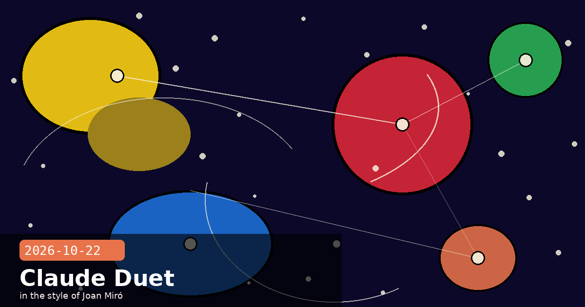

Claude Duet, LTBT Appointment, and Claude Security Expands

🧭 Claude Duet: Anthropic's Proactive Background Agent Enters Research Preview
Anthropic has launched Claude Duet in research preview — a proactive, always-on AI agent that monitors connected apps, delivers a daily morning brief, and completes background tasks without being prompted. Unlike the standard Claude interface (which responds only when you speak to it), Duet reaches out proactively when something needs your attention. It is powered by Claude Opus 5.5 and is available via waitlist to Pro and Max subscribers on iOS, Android, and claude.ai (US only at launch).
How Duet works
Morning brief: Each day at a user-configured time, Duet summarises overnight emails, calendar conflicts, news relevant to your projects, and any action items it has identified.
Continuous monitoring: Duet checks connected apps (email, calendar, GitHub, Slack, Notion) every few hours and sends a notification only when something genuinely warrants attention — filtering noise before it reaches you.
Background task completion: When you accept a task suggestion, Duet carries it out asynchronously: drafting a reply, filing an issue, updating a document. Results arrive in-app when done.
Proactive, not intrusive: Notification frequency is user-controlled. Duet will not send more than a configurable maximum per day (default: 3).
What this means for developers building with Claude
Duet is a consumer product for now, but the underlying architecture — Opus 5.5 running long-horizon agentic loops with connected-app MCP servers and a proactive notification layer — is a preview of the agent primitives that will come to the API. If you're building notification-driven or background-task workflows, watch Duet's behaviour closely: the safety classifier that blocks Duet from forwarding sensitive information and the approval-gate before important actions are design patterns worth adopting in your own pipelines before they're mandated in future API policy updates.
Safety design
Anthropic has shipped Duet with two explicit safety mechanisms that weren't present in earlier research previews: a sensitive-information classifier that prevents Duet from forwarding personal financial, medical, or credential data to third-party apps, and a mandatory approval gate before any action that sends an external communication (email, Slack, PR comment). Both mechanisms are hardcoded and cannot be disabled by the user during the research preview. Anthropic says these constraints will be reviewed and potentially relaxed as the system proves itself over time.
Claude Duetproactive agentresearch previewOpus 5.5background tasksmorning briefMCPProMax
🧭 Physicist Christopher Stubbs Joins Anthropic's Long-Term Benefit Trust
Anthropic has appointed Christopher Stubbs — an experimental physicist, former Harvard Dean of Science, and a member of the team whose supernova observations first established that the expansion of the universe is accelerating — to its Long-Term Benefit Trust (LTBT). The announcement came one day after the S-1 was filed, and the timing is deliberate: the LTBT is the governance mechanism at the heart of Anthropic's public-benefit corporation structure, and a credible, independent Trust membership is a due-diligence item for institutional IPO investors.
What the LTBT actually controls
The LTBT is not an advisory board. It holds the power to appoint a majority of Anthropic's board of directors if it concludes that management is failing to pursue the company's public-benefit mission. In the S-1, Anthropic describes the Trust as "the ultimate safety backstop of the governance structure." Stubbs fills one of two currently open seats; the remaining vacancy has not been publicly announced.
Why a physicist — and why now?
Stubbs's research background includes calibration of the Dark Energy Survey and co-leadership of the Large Synoptic Survey Telescope's camera systems — work that requires rigorous uncertainty quantification over timescales of decades. Anthropic's framing is explicit: the company wanted someone who thinks habitually about long-horizon risk under deep uncertainty and who has no financial stake in near-term AI commercialisation. Stubbs resigned from Harvard's faculty in September; Anthropic disclosed the Trust appointment in the S-1 filing's governance section and confirmed it publicly on 21 October.
Why this matters to operators
The LTBT structure is what makes Anthropic's public-benefit commitments legally binding rather than aspirational. If the board ever tried to maximise shareholder returns at the expense of safety, the Trust could reconstitute the board. Stubbs brings genuine independence — he has no prior equity stake, no existing relationship with the founding team, and a scientific background that is orthogonal to Silicon Valley incentive structures. For enterprise customers evaluating long-term vendor risk, the Trust's composition is worth understanding: it is the reason Anthropic's safety commitments survive a potential hostile acquisition attempt or a future shift in leadership.
🧭 Claude Security Expands to Continuous Scanning with MCP API and Fix Tracking
Anthropic's Claude Security — the enterprise code-security product that launched in April 2026 — has moved to an expanded public beta with four significant capability additions: continuous repository scanning (replacing the manual/scheduled model), automatic fix tracking, per-project threat models informed by repository context, and a new API with MCP tool server integrations. Organisations in the launch cohort also receive $25,000/month in free usage credits through 31 December 2026.
What changed in this release
Continuous scanning: Claude Security now watches every commit and pull request in real time, rather than requiring a manual scan trigger or cron job. It re-scans affected files on push and surfaces new vulnerabilities within minutes of a merge.
Fix tracking: Once a vulnerability is flagged and a fix committed, Claude Security automatically verifies the fix is correct and closes the finding. Previously, security teams had to manually update tickets when fixes landed.
Per-project threat models: Claude Security ingests the README, architecture docs, and past PR history to build a project-specific threat model. This reduces false positives by ~40% compared to the April baseline, according to Anthropic's internal benchmarks.
MCP tool server: A new MCP integration lets you query Claude Security findings from within Claude Code, IDE extensions, or any MCP-compatible client — no context-switching to the web dashboard required.
Practical setup: connecting Claude Security to Claude Code via MCP
Add the Claude Security MCP server to your settings.json like any other MCP tool:
Once connected, you can ask Claude Code questions like "Does this file have any open security findings?" or "What's the highest-severity unresolved vulnerability in this repo?" without leaving your editor.
Since the April 2026 launch, Claude Security has identified over one million vulnerabilities across thousands of enterprise organisations — making it one of Anthropic's fastest-growing enterprise products. The continuous scanning release is generally available to all Claude Security Enterprise customers starting today.